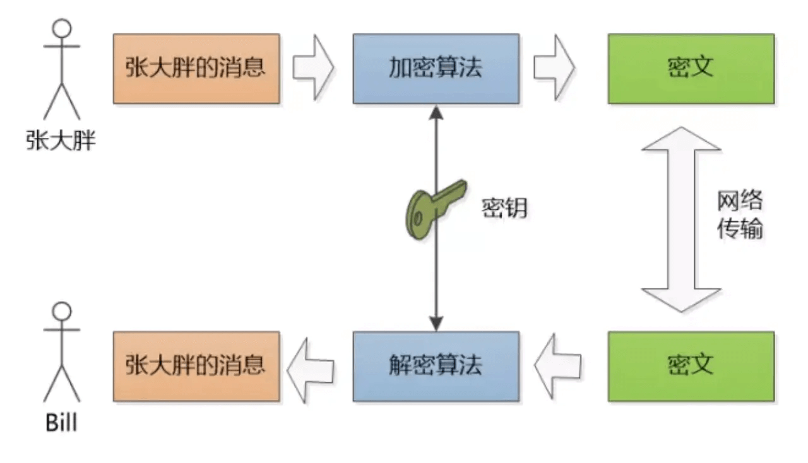
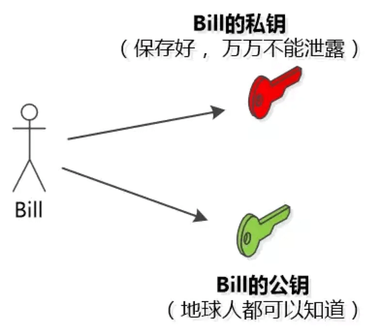
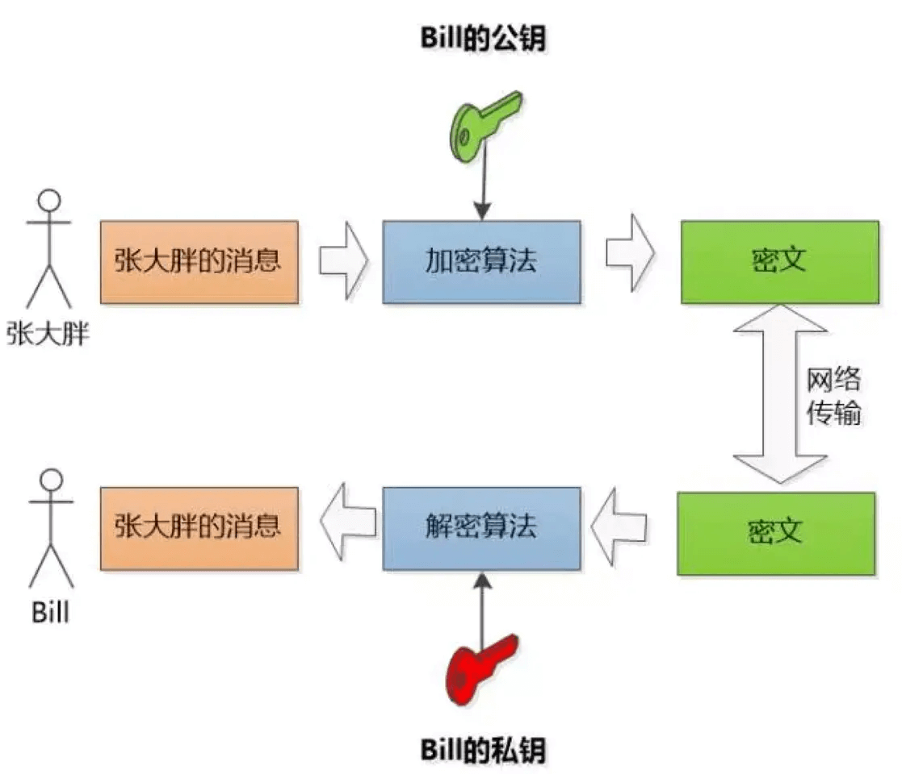
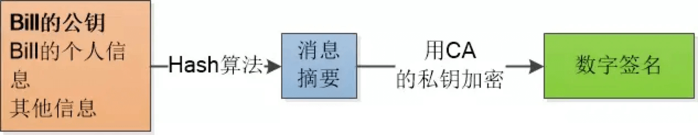
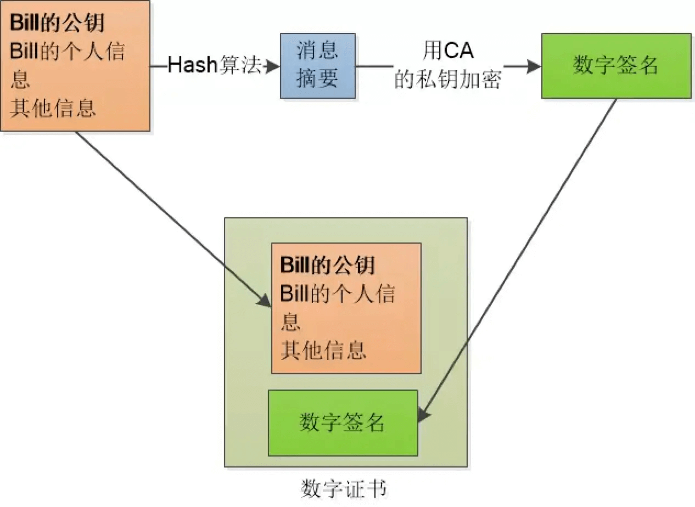
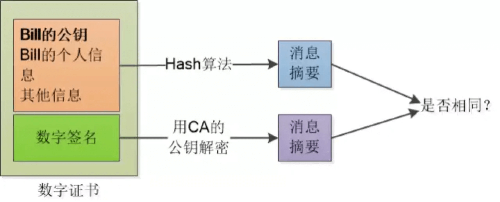

HTTPS 为什么是安全的？
参考答案
以一个故事来学习 HTTPS：
来自中国的张大胖和位于米国的 Bill 进行通信。
由于张大胖和 Bill 都是使用 HTTP 进行通信，HTTP 是明文的，所以他们的聊天都是可被窥视的。于是，二人准备想要改变现状，所以 HTTPS 首先要解决的问题就是要保证传输的内容只有这两个人能看懂。
plan1：使用对称密钥

两人商量了一下，可以使用对称密钥进行加密。（对称密钥也就是加密和解密使用的是同一个密钥）
但是问题又来了~既然网络是不安全的，那么最开始的时候怎么将这个对称密钥发送出去呢？如果对称密钥在发送的时候就已经被拦截，那么发送的信息还是会被篡改和窥视啊~~
所以这种对称密钥的弊端就是，可能被中间人拦截，这样中间人就可以获取到了密钥，就可以对传输的信息就行窥视和篡改。
plan2：使用非对称密钥

RSA（非对称加密算法）：双方必须协商一对密钥，一个私钥一个公钥。用私钥加密的数据，只有对应的公钥才能解密，用公钥加密的数据， 只有对应的私钥才能解密。

这样的话 Bill 将自己的公钥给张大胖，张大胖发送的信息使用 Bill 的公钥加密，这样，只有 Bill 使用自己的私钥才能获取
但是这样有个弊端：
RSA 算法很慢
所以为了解决这个问题，我们使用非对称密钥+对称密钥结合的方式
plan3：非对称密钥+对称密钥
使用对称密钥的好处是速度比较快，使用非对称密钥的好处是可以使得传输的内容不能被破解，因为就算你拦截到了数据，但是没有 Bill 的私钥，也是不能破解内容的。就比如说你抢了一个保险柜，但是没有保险柜的钥匙也不能打开保险柜。
所以我们要结合两者的优点。使用 RSA 的方法将加密算法的对称密钥发送过去，之后就可以使用使用这个密钥，利用对称密钥来通信了。就比如说我将钥匙放进了保险柜，然后将保险柜寄给对方。
中间人攻击
还有一个问题就是在使用非对称密钥的时候，首先需要将 Bill 的公钥给张大胖，那么在这个过程中，安全是没有保障的，中间人可以拦截到 Bill 的公钥，就可以对拦截到的公钥进行篡改。
这也就是相当于我有手机号，虽然是公开的，谁都可以给我打电话，但是刚开始你并不知道我的手机号，我需要将我的手机号发给你，在我发给你我的手机号的时候，被中间人拦截了，然后将我正确的手机号换成了错误的手机号，比如：110，然后，你收到的就是错误的手机号：110，但是你自己还不知道你收到的是错的手机号，这时候，你要是给我打电话，就尴尬了~~
确认身份 —— 数字证书
所以以上的步骤都是可行的，只需要最后一点就可以了，要确定 Bill 给张大胖的公钥确实是 Bill。 的公钥，而不是别人的。（刚刚电话号码的那个例子，也就是说，需要确定我给你发的电话号码是我的，没有被修改的）
那怎么确认 Bill 给张大胖的公钥确实是 Bill 的呢？
这个时候就需要公证处的存在了。也就是说我需要先将我的电话号码到公证处去公证一下，然后我将电话号码传给你之后，你在将你收到的电话号码和公证处的比对下，就知道是不是我的了。
对应到计算机世界，那就是数字签名

数字签名也就是相当于公证处在公证书上盖章。

数字签名和原始信息合在一起称为数字证书，Bill 只需将数字证书发送给张大胖就可以了。
在拿到数字证书之后，就用同样的Hash 算法， 再次生成消息摘要，然后用CA的公钥对数字签名解密， 得到CA创建的消息摘要， 两者一比，就知道有没有人篡改了！

以上你全部看完并且理解了，那么对于 HTTPS 你也就大概有个了解了。
HTTPS（安全超文本传输协议）之所以安全，是因为它采用了以下几种机制来保护数据传输过程中的安全性和完整性：
- 加密通信：HTTPS使用SSL（安全套接字层）或TLS（传输层安全）协议对数据进行加密。这意味着在客户端和服务器之间传输的数据是经过加密的，第三方无法轻易读取或篡改。
- 数据完整性：通过加密算法，HTTPS确保了数据在传输过程中不会被修改。任何对数据的篡改都会导致解密失败，从而保护了数据的完整性。
- 身份验证：HTTPS通过数字证书实现服务器身份验证。数字证书由可信的第三方认证机构（CA）颁发，它证明了服务器的身份是真实可靠的。客户端可以通过验证证书来确认它们正在与正确的服务器通信。
- 公钥和私钥：HTTPS使用非对称加密技术，其中服务器拥有公钥和私钥。公钥用于加密数据，私钥用于解密。即使公钥是公开的，没有对应的私钥也无法解密信息。
- 对称加密：为了提高加密和解密的效率，HTTPS在初始的握手过程中使用非对称加密来交换一个对称密钥，之后的数据传输则使用这个对称密钥进行加密和解密。
- 中间人攻击防护：由于使用了数字证书和公钥基础设施（PKI），HTTPS能够抵御中间人攻击。即使攻击者拦截了通信，没有服务器的私钥，他们也无法解密或篡改数据。
- 安全握手：在建立HTTPS连接时，客户端和服务器之间会进行一次安全握手，以确保双方都同意使用相同的加密算法，并验证证书的有效性。
综上所述，HTTPS通过加密、身份验证、密钥交换和完整性保护等多种机制，为网络通信提供了高度的安全保障。